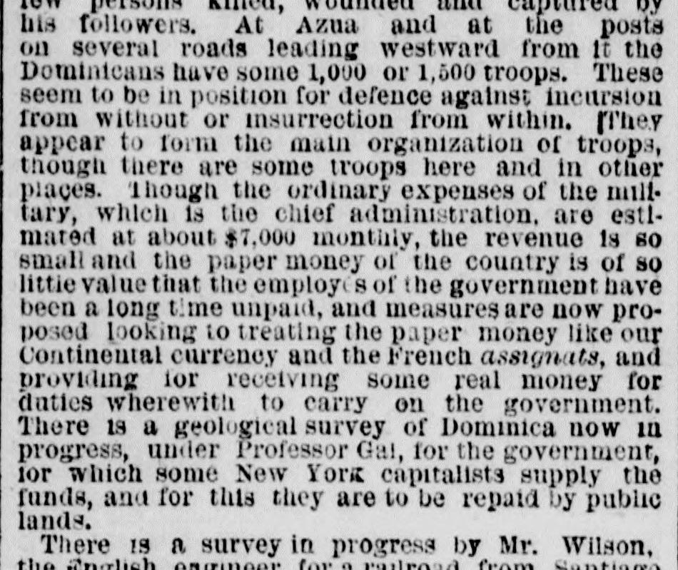
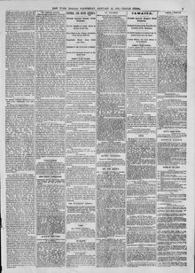

1 hough the ordinary expenses of the military, which isAunque los gastos ordinarios de lo militar, que es
The New York Herald. New York [N.Y.], January 25, 1871. Page 7. Also published as the New York Daily Herald. Published by James Gordon Bennett. A daily newspaper, 1840–1920.The New York Herald. New York [N.Y.], 25 de enero de 1871. Página 7. También publicado como New York Daily Herald. Publicado por James Gordon Bennett. Periódico diario, 1840–1920. View the originalVer el original


See the full pageVer la página completaThe newspaper reported that the Dominican government's military expenses are estimated at $7,000 monthly, but due to low revenue and nearly worthless paper money, government employees have long gone unpaid, leading to proposed measures to receive real money for duties. Additionally, a geological survey is being conducted by Professor Gal and funded by New York capitalists, while an English engineer named Mr. Wilson is surveying a practicable railroad route from Santiago to Samaná Bay. A monthly steamer between New York and the island supplies the U.S. squadron, carries mails, and fosters trade, with the excerpt noting that under the United States government, Dominica could supply cheap coffee and sugar.El diario consignó que los gastos militares del gobierno dominicano se calculaban en unos 7.000 pesos mensuales, pero que a causa de la escasez de rentas y la virtual inutilidad del papel moneda, los servidores públicos llevaban largo tiempo sin cobrar sus sueldos, promoviéndose medidas para exigir numerario metálico en el cobro de derechos arancelarios. Por otra parte, el profesor Gabb [Gal en el texto] adelantaba un estudio geológico sufragado por capitalistas neoyorquinos, al tiempo que un ingeniero inglés, el Sr. Wilson, trazaba una posible vía férrea de Santiago a la bahía de Samaná. Un vapor con servicio mensual entre Nueva York y la isla abastecía a la escuadra naval de los Estados Unidos, conducía correspondencia e impulsaba el comercio, observando el extracto que bajo el gobierno estadounidense Santo Domingo podría suministrar café y azúcar a bajo coste.
FULL TEXT:TEXTO COMPLETO:
I have not ascertained satisfactorily what is the situation here, but I will briefly state my belief on the subject.No he averiguado satisfactoriamente cuál es la situación aquí, pero expondré brevemente mi creencia sobre el tema.
President Baez, as a statesman and patriot, sincerely desires the annexation of Dominica to America. Delay in accomplishing this is attended by financial trouble, anxiety and risk of insurrection. There is a very rich and large extent of valley country on the western frontier of Dominica, watered by the affluents of the Antibonite, containing some small towns, bearing Spanish names, but of which the Dominicans have not had the complete possession. It is here that Cabral operates with a small predatory party, which President Baez believes is procured and supported by Hayti. Cabral is now at San Juan, say forty miles east of the boundary line between Dominica and Hayti, according to the treaty between Spain and France, with his followers, variable in numbers, but always small, whence he makes raids and retreats as occasion requires. His last operation, noised about as a movement to defeat annexation, was very insignificant and amounted to a few persons killed, wounded and captured by his followers. At Azua and at the posts on several roads leading westward from it the Dominicans have some 1,000 or 1,500 troops. These seem to be in position for defence against incursion from without or insurrection from within. They appear to form the main organization of troops, though there are some troops here and in other places. Though the ordinary expenses of the military, which is the chief administration, are estimated at about $7,000 monthly, the revenue is so small and the paper money of the country is of so little value that the employés of the government have been a long time unpaid, and measures are now proposed looking to treating the paper money like our Continental currency and the French assignats, and providing for receiving some real money for duties wherewith to carry on the government.El presidente Báez, como estadista y patriota, desea sinceramente la anexión de Dominica a América. La demora en lograr esto viene acompañada de problemas financieros, ansiedad y riesgo de insurrección. Hay una extensión muy rica y grande de país de valles en la frontera occidental de Dominica, regada por los afluentes del Antibonito, que contiene algunos pueblos pequeños, con nombres españoles, pero de los cuales los dominicanos no han tenido la posesión completa. Es aquí donde Cabral opera con un pequeño grupo depredador, que el presidente Báez cree que es procurado y sostenido por Haití. Cabral está ahora en San Juan, digamos a cuarenta millas al este de la línea fronteriza entre Dominica y Haití, según el tratado entre España y Francia, con sus seguidores, variables en número, pero siempre pocos, desde donde hace incursiones y se retira según la ocasión lo requiere. Su última operación, divulgada como un movimiento para derrotar la anexión, fue muy insignificante y ascendió a unas pocas personas muertas, heridas y capturadas por sus seguidores. En Azua y en los puestos de varios caminos que conducen hacia el oeste desde allí, los dominicanos tienen unas 1,000 o 1,500 tropas. Estas parecen estar en posición de defensa contra incursión desde fuera o insurrección desde dentro. Parecen formar la organización principal de tropas, aunque hay algunas tropas aquí y en otros lugares. Aunque los gastos ordinarios de lo militar, que es la administración principal, se estiman en unos $7,000 mensuales, los ingresos son tan pequeños y el papel moneda del país es de tan poco valor que los empleados del gobierno llevan mucho tiempo sin cobrar, y ahora se proponen medidas encaminadas a tratar el papel moneda como nuestra moneda Continental y los asignados franceses, y a proveer para recibir algún dinero real por los derechos con que llevar adelante el gobierno.
In this article, the newspaper calls the country 'Dominica.' It means the Dominican Republic, not the island of Dominica.En este artículo, el periódico llama al país «Dominica». Se refiere a la República Dominicana, no a la isla de Dominica.
This collection gathers the coverage of the Dominican Republic in the American press, in the order it was published.Esta colección reúne la cobertura de la República Dominicana en la prensa estadounidense, en el orden en que se publicaron.